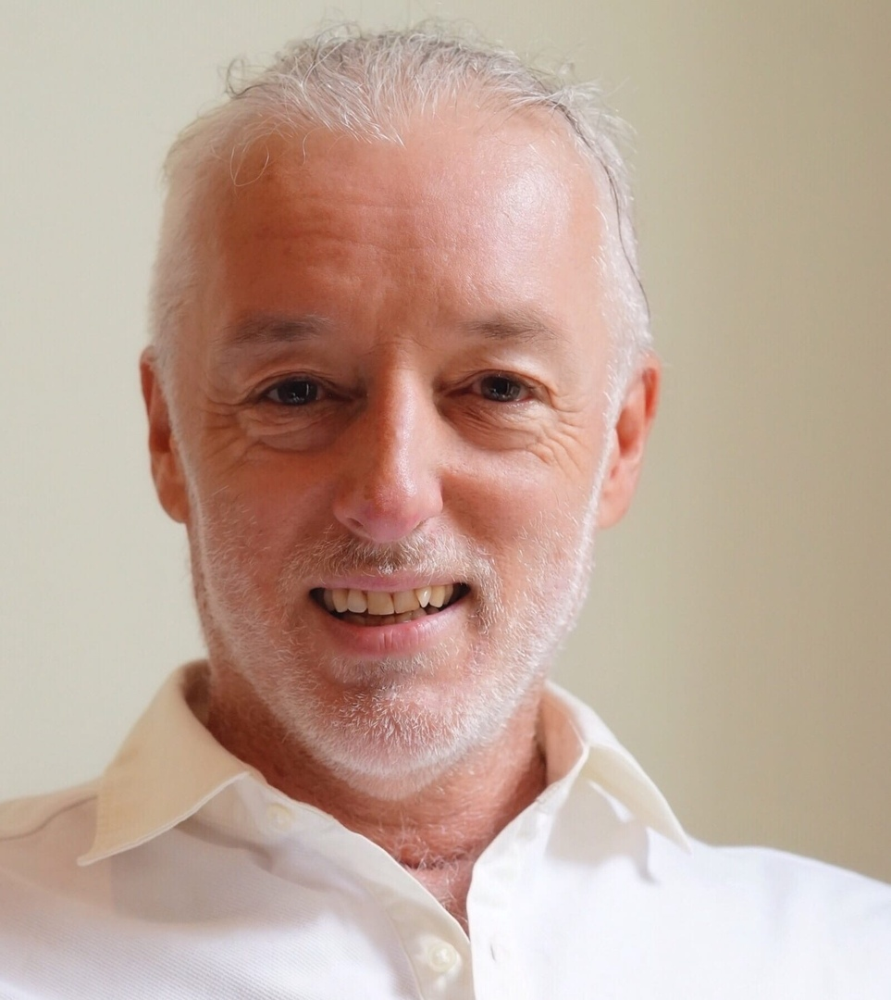

о программе
Когда привычной жизни становится недостаточно
Даже если многое достигнуто, внутри может оставаться потребность в чем-то настоящем: глубине, близости, живом контакте с собой. Ретрит превращает этот поиск в проживаемый опыт.
human / retreat / chiraly
Три древние традиции как один путь возвращения к себе: через тело, дыхание, энергию, близость и живое присутствие.
о программе
Даже если многое достигнуто, внутри может оставаться потребность в чем-то настоящем: глубине, близости, живом контакте с собой. Ретрит превращает этот поиск в проживаемый опыт.
Тантра соединяется с Дао, а система чакр становится живой картой пробуждения энергии и сознания. Дыхание раскрывает тело, прикосновение становится медитацией, близость - пространством осознанности и доверия.
Небольшая группа нужна не для ощущения эксклюзивности, а для глубины и безопасности процесса. Каждый участник видим, важен и получает больше внимания ведущих.
три традиции
Путь любви, чувствительности и живого присутствия. Искусство встречи с собой, другим человеком и самой жизнью.
Семь ворот трансформации, через которые энергия поднимается слой за слоем, раскрывая тело, сердце и сознание.
Путь естественности и текучести: мягкая сила, внутренняя гармония и возвращение тела в поток энергии ци.
кому подходит
Формат не строится вокруг обязательного парного взаимодействия. В группе участвуют пары, друзья и участники без пары, а пространство выстроено так, чтобы каждому было безопасно и естественно.
программа ретрита
На странице Samudro программа описана как путь через семь чакр, тантрические практики, ритуалы, медитации, даосскую циркуляцию энергии ци, телесные и дыхательные процессы.
Возвращение внимания из мыслей в ощущения, раскрытие тела и способность быть в моменте.
Работа с энергетическими центрами и каналами, движение от корневой силы к сердцу и расширению сознания.
Парные и групповые практики осознанного взаимодействия, контакт с мужской и женской энергией.
Медитации, ecstatic movement, алхимия внутреннего баланса и процессы, которые помогают перенести опыт в жизнь.
Морская прогулка как часть программы восстановления и живого контакта с местом.
Хайкинг к Янарташу и Черному пляжу - природный ритуал перехода и внимания.
Вечер в античном амфитеатре: опера или балет под открытым небом.
ведущие

Самудро Прем и Тао Танмая ведут процесс как зрелая пара: через баланс инь-ян, шива-шакти, мягкость и ясное удержание пространства.
Психология пробуждения, тантра, чакры, глубинные процессы и линия IMAP.
Женское присутствие, мягкость, телесная чувствительность и поддержка раскрытия процесса.
место
Ретрит проходит в Чиралах, одном из самых природных и спокойных мест Турции. Море, сосны, горы и бархатный сезон создают внешнюю среду, которая поддерживает внутреннее замедление.
Ликийская тропа между морем и горами.
Рядом огни Химеры, древний Олимпос и следы античных цивилизаций.
Теплое море, свободное время, отдых и интеграция между практиками.
условия участия
Для глубины процесса в группе сохраняется баланс мужской и женской энергии. Рекомендуется участие в паре, для пар действует скидка 10%.
FAQ
Ключевые условия по участию и проживанию взяты с официальной страницы Samudro. Финальные детали лучше подтвердить в диалоге перед оплатой.
Да. В описании ретрита указано, что участвуют пары, друзья и люди без пары. Формат основан на уважении, осознанности и живом человеческом контакте.
Ретрит подходит практикам разного уровня, от начинающих до опытных. Важно желание быть в процессе и бережное отношение к себе и группе.
Морская прогулка, хайкинг к огням Химеры и Черному пляжу, вечер в амфитеатре Аспендоса, церемония какао, банный ритуал, аквафлоатинг и свободное время.
Стоимость участия начинается от 900 EUR для первых 10 человек до 1 июля. Далее: 1000 EUR до 1 сентября и 1100 EUR до начала ретрита. Предоплата для бронирования места — 100 EUR.
Проживание считается отдельно за сутки. На странице Samudro указаны варианты от $50-75 с человека при совместном размещении и от $100-120 за одноместный номер.
Заявка здесь работает не как покупка в один клик, а как вход в диалог: подходит ли вам формат, группа, интенсивность и даты.